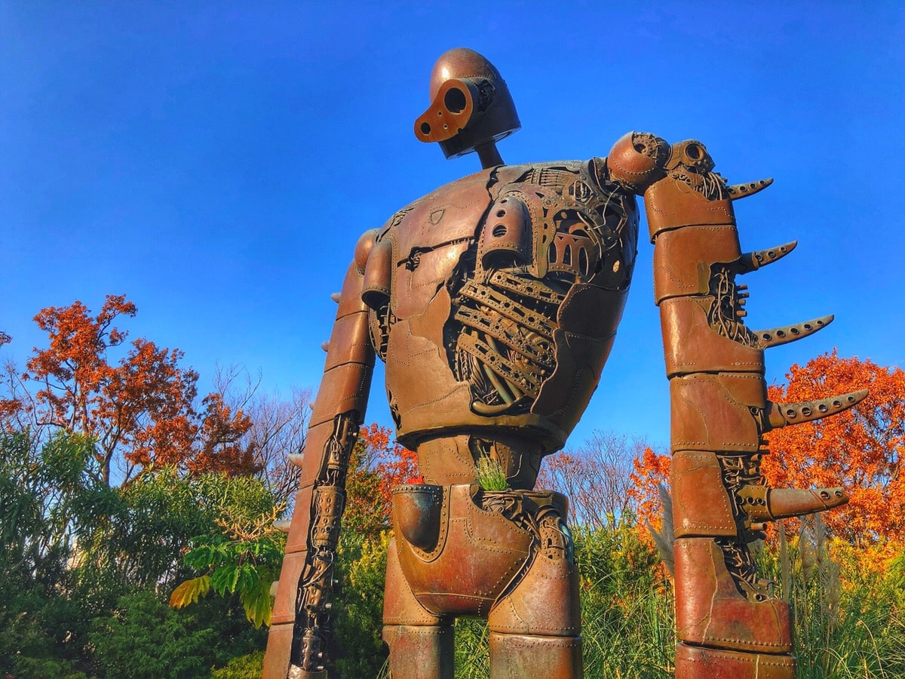

World of Ghibli
×

Bagi para pecinta film animasi Ghibli, pasti tau dengan Museum Ghibli di Tokyo, Jepang. Museum yang berlokasi di Mitaka, sebuah kota di pinggiran Tokyo, memiliki daya tarik yang
sangat tinggi. Pengunjung yang merupakan penggemar animasi Ghibli bahkan harus dibatasi jumlah pengunjung per-harinya. Seperti film animasinya yang dapat dinikmati oleh berbagai
kalangan usia, Museum Ghibli yang dirancang oleh Hayao Miyazaki diisi dengan karakter bagai pergi ke dunia fantasi!
Selain dikenal dengan karakter film animasinya, Museum Ghibli juga dikenal dengan area museum yang dikelilingi oleh kebun bunga yang berpadu dengan warna dinding bangunan yang dicat
menggunakan warna cerah dan lukisan mural dengan bentuk yang unik. Ruangan di dalamnya terbagi ke dalam beberapa adaptasi film, diantaranya adalah A Gift from Grampa yang diisi dengan
berbagai jenis buku dan mainan, My Neighbor Totoro yang di dalamnya terdapat Cat Bus raksasa sebagai Totoro, serta Lupin, Laputa Castle in The Sky yang berada di atap museum berbentuk
taman dengan robot setinggi 5 meter yang dipercaya sebagai penjaga Museum Ghibli.
Special Exhibitions Dedicated to Ghibli

×

Selain menyediakan tempat untuk menikmati pengalaman berada pada Studio Ghibli secara langsung di dunia nyata, Museum Ghibli juga pada periode tertentu menggelar sebuah exhibitions
atau pameran khusus yang menampilkan karya hasil produksi Ghibli maupun studio lain. Spirited Away dan Castle in The Sky termasuk karya asli milik Ghibli yang dipamerkan. Karya dari
studio lain yang dipamerkan bersama Ghibli biasanya berasal dari Pixar Animation Studios, Goldilocks, dan The Three Bears.
Exhibitions ini merupakan daya tarik khusus bagi para penggemar. Hal ini disebabkan oleh adanya penayangan film pendek secara eksklusif pada teater yang berada di Museum Ghibli.
Meskipun sebagian besar film pendek yang ditayangkan hanya tersedia dalam bahasa Jepang, beberapa pengunjung merasa cukup puas dengan melihat animasi yang begitu memukau.
Ghibli Park in Nagoya
×

Museum Ghibli di Tokyo bukanlah satu-satunya daya tarik penggemar film animasi Ghibli. Ghibli Park yang akan dibuka November mendatang merupakan alternatif lain yang dapat dikunjungi.
Ghibli Park yang berlokasi di Nagoya memiliki lima kompleks area, yaitu Hill of Youth, Ghibli's Large Warehouse, Monokone's Village, Valley of Witches, dan Dondoko Forest. Terdapat
bangunan dan objek yang diadaptasi dari karya Laputa: Castle in The Sky, Howl's Moving Castle, Arrietty, My Neighbor Totoro, dam masih banyak lagi.